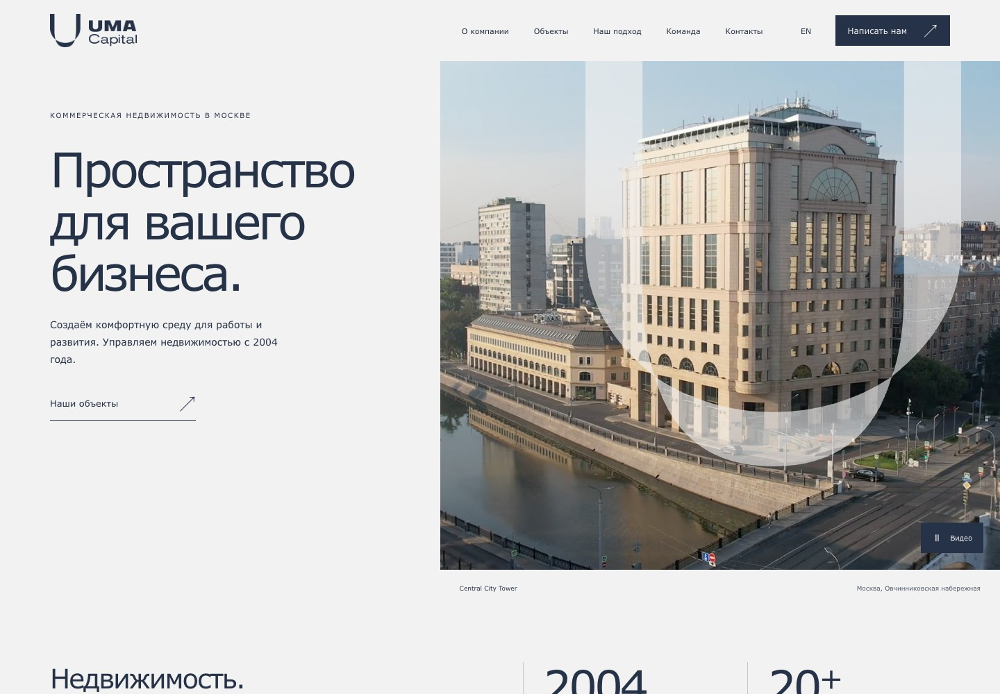
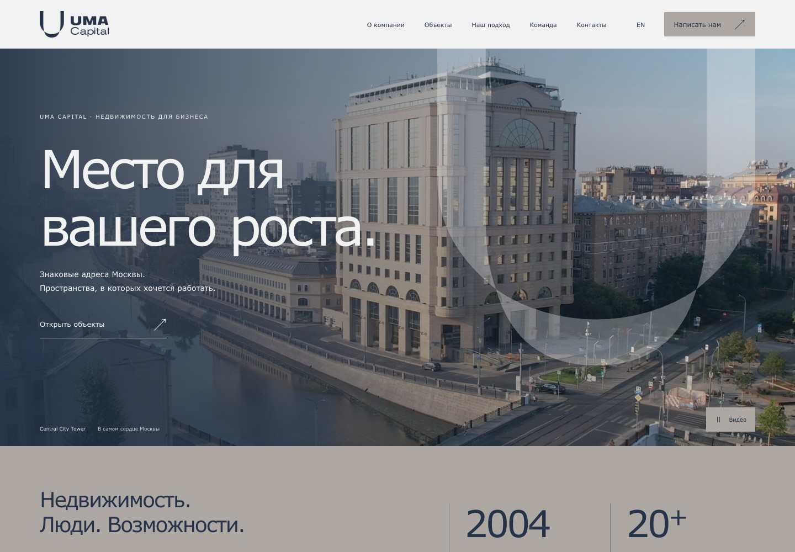

01. Архитектура
Светлая архитектурная композиция. Раздельный hero, крупная U-графика, асимметричная галерея объектов и контрастные тёмные секции.
Интерактивные главные страницы с видео UMA Capital, фотографиями объектов и команды. Откройте каждую концепцию, прокрутите страницу и посмотрите, как работают карточки, галереи и анимации.

Светлая архитектурная композиция. Раздельный hero, крупная U-графика, асимметричная галерея объектов и контрастные тёмные секции.

Панорамный видеоhero, более крупная типографика, переключаемая подборка объектов и бежевые поверхности. Акцентные кнопки «Написать нам».